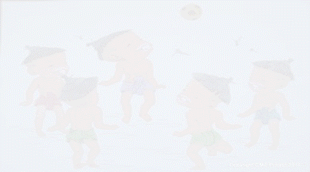

ျမန္မာ့ရိုးရာ ျခင္းလုံးခတ္ကစားနည္းသည္ ျမန္မာ့တုိ႔၏ မူပိုင္အားကစားနည္းတစ္ရပ္အျဖစ္ အေရွးအခါကပင္ ေပၚေပါက္ခဲ့ေသာ အားကစားနည္း
တစ္ရပ္ျဖစ္ပါသည္။ ဘိုးဘြားအစဥ္အဆက္က အဖိုးထိုက္တန္သည့္ အေမြအႏွစ္ ထားရွိခဲ့ေသာ ျမန္မာ့ကိုယ္ပိုင္ဥာဏ္ႏွင့္ တီထြင္ခတ္ကစားခဲ့သည့္
အမ်ဳိးသားရုိးရာ ယဥ္ေက်းမႈ အားကစားတစ္ရပ္ ျဖစ္ပါသည္။ ေရွးေခတ္က ခတ္ကစားခဲ့ၾကေသာ ျခင္းခတ္ကြက္မ်ားအျပင္ ျခင္းခတ္ကစားနည္း
တိုးတက္ေရးအတြက္ ေခတ္ႏွင့္အညီ တိုးတက္ေအာင္ ကိုယ္ပိုင္ဥာဏ္ႏွင့္ ျခင္းခတ္ကြက္ အသစ္အဆန္း တီထြင္ႀကံဆ ခတ္ကစားသင့္ပါသည္။
ျမန္မာ့ရိုးရာျခင္းလံုး၀ိုင္းဖြဲ႕၍ ခတ္ကစားၾကပုံအေၾကာင္းကို အနည္းငယ္တင္ျပလိုပါသည္။ အခ်င္း၂၂ ေပ စည္း၀ိုင္းအတြင္း လူ ၆ ဦး၀ိုင္းဖြဲ႕၍
ျခင္းခတ္ကစားရာတြင္ ျခင္းလုံးေျမသို႔မက်ေအာင္ ထိန္သိမ္းကစားၾကရပါမည္။ တစ္ဖက္လူခတ္လိုက္ေသာျခင္းလုံးကို ေျမသို႔မက်ေအာင္ ႀကိဳးစား
ကစား၍ တစ္ဖက္လူထံသို႔ ေကာင္းေအာင္ျပန္ပို႔မည္ဟူေသာ စိတ္ေကာင္းေစတနာေကာင္းထား၍ ခတ္ကစားၾကရပါသည္။

ျခင္းခတ္ကစားသမားမ်ားသည္ ျမန္မာ့ရိုးရာျခင္း၀ိုင္း၏ စည္းကမ္းခ်က္မ်ားအတိုင္း လိုက္နာထိန္းသိမ္းခတ္ကစားၾကရန္ႏွင့္ ေရွးမူျခင္းခတ္ကြက္
မ်ားကို ထိန္းသိမ္းခတ္ကစားရင္း ျမန္မာ့ရိုးရာ ျခင္းလံုးအားကစားနည္းဂုဏ္ကို ျမွင့္တင္ေပးႏိုင္ေစရန္ ရည္ရြယ္ ေရးသားရျခင္း ျဖစ္ပါသည္။ ျမန္မာ့ရိုးရာ
ျခင္းလုံးအားကစားနည္းမွာ ၀ိုင္းဖဲြ႕၍ ျခင္းလုံးကို ေျမသို႔မက်ေအာင္ တစ္ေယာက္ႏွင့္ တစ္ေယာက္ ေဖးကာမကာျဖင့္ ကူညီခတ္ကစားရသည့္နည္း
ျဖစ္သျဖင့္ ေပ်ာ္ရႊင္မႈ၊ က်န္းမာမႈႏွင့္အတူ လူအခ်င္းခ်င္း ရိုင္းပင္းကူညီလိုစိတ္ရွိမႈ စသည့္ စိတ္ပိုင္းေရာ၊ ရုပ္ပိုင္းပါ ေကာင္းမြန္ေစမည့္ အေလ့အက်င့္
ေကာင္းမ်ားႏွင့္ က်န္းမာေရးအတြက္သာမက ျမန္မာ့ရိုးရာ အားကစားနည္းတစ္ရပ္ကို ထိန္းသိမ္းသည့္ အေနျဖင့္လည္း ခတ္ကစားသင့္သည္။
ျမန္မာ့ရိုးရာ ယဥ္ေက်းမႈတစ္ရပ္ ျဖစ္ေသာ ျခင္းခတ္အားကစားနည္းကို မေပ်ာက္ပ်က္ေအာင္ ဆက္လက္ထိန္းသိမ္း ေစာင့္ေရွာက္ရန္ ႏွင့္ ျမန္မာ
လူမ်ဳိးမ်ား၊ တိုင္းရင္းသားလူမ်ဳိးစု အားလုံးက မိမိတတ္ႏိုင္သည့္ဘက္မွ ၀ိုင္း၀န္း ကူညီပံ့ပိုးႏိုင္ေစရန္ ေရးသားေဖာ္ျပအပ္ပါသည္။ |